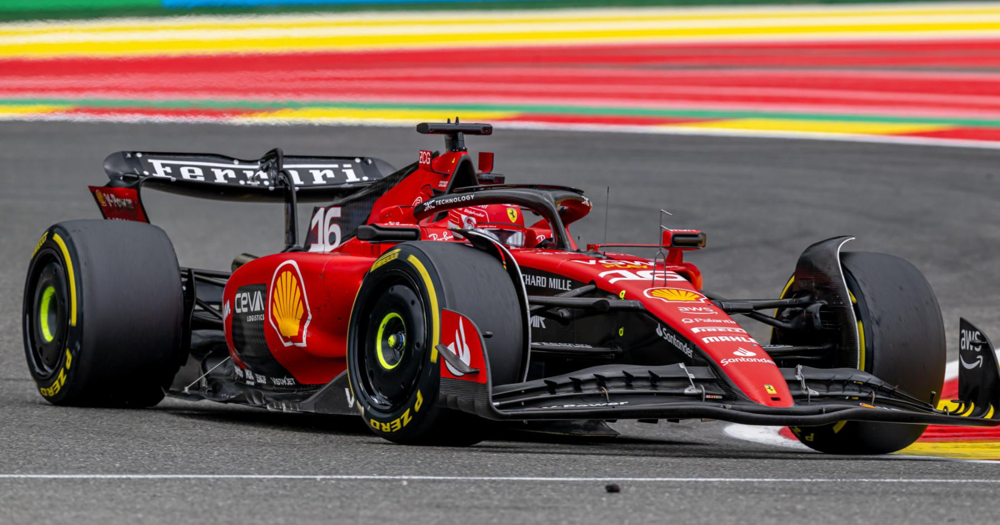
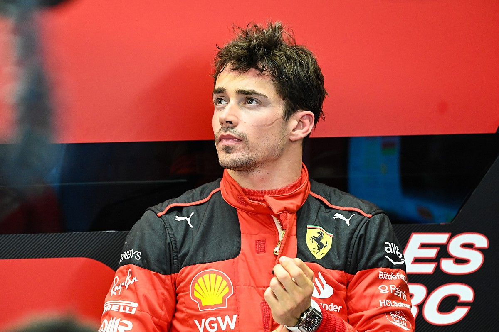

La voiture de Formule 1 de Ferrari incarne l'excellence italienne et l'héritage glorieux de la Scuderia. Dotée d'un design emblématique et d'une ingénierie de pointe, elle allie puissance, agilité et élégance. Propulsée par un moteur V6 turbo hybride, elle rugit sur la piste avec une performance inégalée. Les couleurs emblématiques de Ferrari, le rouge et le noir, reflètent la passion et l'esprit de compétition de l'écurie. Chaque saison, la voiture de Ferrari continue d'inspirer les fans du monde entier avec ses performances remarquables et son engagement envers l'excellence.
Charles Leclerc, né le 16 octobre 1997 à Monte-Carlo, est un pilote automobile monégasque qui a rejoint l'écurie Ferrari en Formule 1 en 2019. Doté d'un talent remarquable dès ses débuts en karting, Leclerc a rapidement gravi les échelons du sport automobile. Son arrivée chez Ferrari a été saluée comme un moment clé dans sa carrière. Avec son style de conduite agressif et sa détermination, il incarne l'avenir prometteur de la Scuderia Ferrari.
